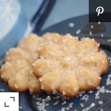

Butter Snow Flakes Recipe

Nutrition info
- Prep: 15 mins
- Cook : 15 mins
- Additional: 30 mins
- Total: 1 hour
- Serving: 36
- Yield: 6 dozen
What holiday recipe is complete without some sweets. I love me some sweets.
I have yet to get any cavities so I must be eating the right things.
Now this is a farely simple dish and one that taste amazing. Of course not
as amazing as grandma's cookies. No one makes cookies like grandma. But you
can surely try.
Ingredients
Here is what you're going to need to give it your best shot.
- 2 ¼ cups all-purpose flour
- ¼ teaspoon salt
- ¼ teaspoon ground cinnamon
- 1 cup butter
- 1 (3 ounce) package cream cheese, softened
- 1 cup white sugar
- 1 egg yolk
- 1 teaspoon vanilla extract
- 1 teaspoon orange zest
Instructions
Follow these directions to make them taste almost like grandma's cookies.
- Preheat oven to 350 degrees F (175 degrees C). Sift together the flour, salt, and cinnamon; set aside.
- In a medium bowl, cream together butter and cream cheese. Add sugar and egg yolk; beat until light and fluffy.
Stir in the vanilla and orange zest. Gradually blend in the dry ingredients. Fill a cookie press or pastry bag
with dough, and form cookies on an ungreased cookie sheet.
- Bake for 12 to 15 minutes in the preheated oven, or until the cookies are golden brown on the peaks and
on the bottoms. Remove from cookie sheets at once to cool on wire racks.
There you have it. You have made your "almost taste like grandma's cookies" cookies. Now and enjoy and pray that you
won't be making a trip to the dentist anytime soon.
If you want to see what others are saying about this dish, hold that cookie in your mouth and move the mouse curser right
here.
Check out other recipes on my page here. Thank you to Linda
for posting this recipe on allrecipes. You can find her here.
Enjoy!
Back to top
Back to home